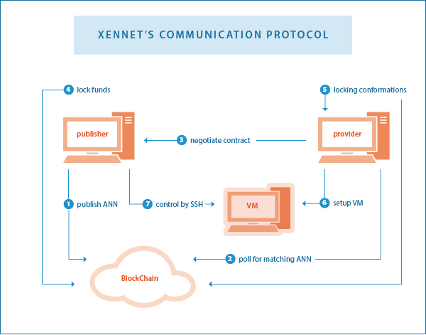

Xennet is a public, distributed, and decentralized Supercomputer. Computation power is traded on Xennet's open market platform. Anyone can rent computation power and use it to run arbitrary tasks. Anyone can monetize their hardware by offering unused computation power for sale.
Xennet allows Publishers who need computation power to run arbitrary computational tasks. Computation power is supplied by Providers for a negotiated fee. A free-market infrastructure brings Publishers and Providers together. Publishers can hire many computers and run whatever they want on them safely, thanks to cutting-edge virtualization technology. Payment is continuous and frictionless, thanks to Blockchain technology, among other technologies that shall be discussed later on.
The network is 100% distributed and decentralized: there is no central entity of any kind, just like Bitcoin. All software will be open source. Publishers pay Providers directly, there is no middleman. Accordingly, there are no payable commissions, except for regular transaction fees which are being paid to XenCoin miners.
It is a totally free market: all participants are free to pay or charge by any rate they want. There are no restrictions. Hence, we put additional focus on customizability. We allow advanced participants to control all parameters and conditions of their nodes in a versatile way. On the other hand, simplicity and automation are made possible by making the client software implement automatic risk-reward considerations by default. In addition, we present a novel pricing model.
So how are we going to implement all this cool stuff? If you don't really care about the implementation, you may want to jump to the Distributed Computations and Virtualization or Economic Aspects sections.
General Flow
The following summarizes the general idea of the software's communication protocol between publisher A and provider B:
- Publisher A broadcasts an announcement (ann) to the blockchain, saying it is seeking providers. The ann contains information about the required systems in terms of hardware capabilities, and the publisher's IP address.
- Provider B polls on the blockchain. Once an ann that matches its filter is found, it connects to A's IP address.
- A and B verify each others' identity by challenging their keys, which are the key pair of their blockchain addresses.
- B sends A information about its hardware capabities.
- A and B negotiate the price and form a contract.
- A and B initiate the Micropayments protocol. B signs a refund transaction and A deposits coins in a 2-of-2 multisig address. B awaits confirmation.
- B creates a virtual machine and gives A SSH control over it.
- Every few seconds, both A and B read accumulated usage measurements. They use the Micropayment protocol to transfer coins according to the measurements and the contract terms.
The following sketch summarizes the above process (Note: the step numbering in the diagram is different from the above list!):

The process described is a summary, and only covers the general principles. Many open questions may still remain, some of these are addressed in detail below. But first, some technical background about the Xennet environment.
The system's building blocks consist of new-generation virtualization technologies (e.g. docker), benchmarking technologies (e.g. phoronix-test-suite), an improved Blockchain technology, and a novel protocol. Xennet includes the following software components:
- A Linux distribution (xennet-os), to be installed on either bare metal or in a Hypervisor (such as VirtualBox or Qemu), with Xennet code to manage Docker containers and collect measurements.
- A client software (xennetd and xennet-qt) that configures and manages the xennet-vm according to the preferences of publishers and providers.
- A blockchain (xencoind and xencoin-qt), implementing XenCoin as a cryptocurrency, being used as tokens to use computing machines.
Distributed Computations and Virtualization
The world of High-Performance Computing (HPC) contains many sub-segments, that compose the global software market. HPC may include big-data, number-crunching, MapReduce, text analytics, predictive, or molecular dynamics tasks. Publishers are typically commercial companies, research institutes, individual researchers and developers, and certain custom applications. HPC and big-data are major, if not the largest segments of the global software market. For example, as of 2013, more than half of the Fortune 50 companies use Apache Hadoop, including Facebook and Yahoo. Hadoop is the leading solution of distributed computing, with extensive market adoption. There is a wide variety of applications over Hadoop. Moreover, Hadoop is only a part of the market. A full overview of this market is beyond the scope of this document. Notably, this market is where most of the money flows in the world of software nowadays.
Typical Xennet publishers do not need one virtual machine - they need thousands of them. Take, for example, protein folding related computations. A single researcher wants to fold a certain protein. It would take him days or weeks to run computations on the university's computer labs, if he gets lucky enough to get access to the university's computation resources. He may get even luckier and have F@H fold it for him. But for most researchers, AWS may be the only practical option. Unfortunately, it would probably be too expensive. We will emphasize the latter point when we get into the accounting. But for now, we note that our researcher already has software that distributes the work (e.g. gromacs). All he needs is tons of metals.
Nowadays, the distributed computing market is pretty mature. From a software perspective, a wide variety of solutions are available, accessible by everyone. But there is a steadily increasing demand for more hardware and more computation power. Hardware is the current bottleneck in massive computations.
Note that when a distributed application is considered, size equals speed: if I have x10 more machines, I'll fold my protein ~x10 times faster. Since Xennet is open for everyone to monetize their hardware (PC, laptop, mobile), we expect it to be the largest supercomputer in the world, by far, hence the fastest for distributed tasks. This is another potential advantage of Xennet.
Now imagine our researcher sitting at home, typing something like 'xennet -n 100 -m 512M', and instantly receiving a list of 100 local ports to which he can ssh without a password (thanks to ssh asymmetric key mechanism). Each port leads him to a different remote host with 512MB of RAM.
Note the difference between the new generation, Docker-like, so-called OS-virtualization, and between traditional, virtualbox-like full virtualization.
Please refer to Appendix I below for a brief description of Docker.
As mentioned above, there are still some open questions. What is the billing scheme? How can you price the outcome? How are measurements taken and agreed? What if one side tries to cheat, either through resource consumption or false computation? In what way does the behavior of XenCoin's Blockchain differ from Bitcoin's one?
Pricing and Measurements
Usage measurement is done by reading accumulated consumption data from procfs (a Linux standard that is able to provide this info). The contract between the parties contains the rate per each component (such as CPU instructions/cycles/time, user time, kernel time, memory reads/writes, disk/network read/write, GPU usage etc.). Therefore every several seconds they both read the data and exchange transactions according to the agreed rates as in their contract.
In computational power rental, there is an inherent uncertainty regarding the value of each consumed unit - for example CPU time. One second on one CPU may not be as valuable as one second on another CPU, even if their clock rates are equal. This depends on the specific CPU architecture and features, among many other variables which are practically unknown.
In order to estimate the value of the resources, xennet-os first runs some standard benchmarks, while recording the procfs measurements during each benchmark. We chose phoronix-test-suite as our benchmarking system.
Please refer to Appendix II to get some background regarding phoronix.
After procfs measurements of some standard task are taken (standard benchmark), data now has to be cleaned from inter-correlations. The connection between the hidden variables and the measurements needs to be found. This will be done using my following algorithm:

The gross price of running a certain benchmark is determined by negotiation between the parties. All the rest is followed by the formula, which translates this information (for many benchmarks) into pricing that depends on procfs variables.
Trust
The Provider might try to cheat and declare better benchmark scores, or maliciously interfere in xennet-os in order to fake the measurements. He may even maliciously modify the computation. Such cases are handled by the following paradigms:
- Since we use the micropayments protocol, the exposure is bound to short periods of time. Under no circumstances, a few lost seconds of computation should cause a significant financial loss.
- Publishers, which naturally require many computers, can keep only the most economic part of them. For example, they can hire 10K machines, and after 15 seconds drop the least efficient 5K.
- There is an incentive for both sides to maintain a fixed address, so their reputation will be public. In addition, every node will record historical information regarding nodes it worked with.
- For the case of malicious output modification and without countable reputation, risk can be decreased exponentially by performing computations several times.
The Blockchain
If you're unfamiliar with Bitcoin and Blockchain, please get yourself familiar with the related information on Wikipedia by following the above two links. Focus on the Blockchain algorithm, which is the core technology of decentralization, distribution and frictionless value transmission.
Note: Regular Blockchain transactions are not frictionless and require transaction fees. On Xennet, ongoing payments are frictionless thanks to the Micropayment algorithm, which is well known and trusted in the world of Blockchain algorithms. Transaction fees will be paid once the accumulated bill is redeemed, and not on every microtransaction.
One would naturally ask: why isn't Xennet planned to be implemented over Bitcoin? The answer is mainly the following: in order to initiate a micropayment channel, it is necessary to deposit money in a multisig address, and the other party has to wait for confirmations of this deposit. This can make the waiting time for the beginning of work to last 30-90 minutes, which is definitely unacceptable.
On the other hand, shortening the block time can put the network at risk. Therefore, and for other reasons, the following features are different on XenCoin's chain compared with the Bitcoin's one:
- Bearing in mind that the time it takes the block to propagate over the network is a crucial factor influencing the risk of attacks, the following modifications are being considered:
- Blocks will be transferred compressed. Huffman compression can be a good candidate.
- Blocks will be transferred asynchronously: when one node begins to receive a block, it immediately broadcasts its partial data as it receives it. Of course, nodes will validate the whole block and discard it in case it's invalid.
- Ethereum GHOST-like implementation of stale blocks is considered, which increases the speed dramatically while maintaining the same risk. Please refer to Appendix III for information about this mechanism.
- Proof-of-Stake combined with Proof-of-Work are considered, upon their various variants.
-
GPU or CPU/GPU mining algorithms are considered, or a new one, based on common PC capabilities.
Algorithm sketch:
Let k be a parameter (typically 10 if we want it both ASIC and GPU resistant nowadays). We prepare a memory mapped file of size k^k bytes. We treat this memory as a k-dimensional array, having k indices each running from 1 to k.
The value at a certain multi-index is calculated recursively as follows: the last byte of the hash of the string combined from taking the k bytes taken by decreasing each single index by 1.
Example: if k=2, then: m[i][j] = hash(concat(m[i-1][j], m[i][j-1)). The zero indices return the first k bytes of the hash of the block header. Finally, we hash the whole k^k scratchpad, and compare the result to the desired target. - Propagate only block header and transaction hashes. Nodes typically have the transactions themselves, otherwise they can be retrieved from peers.
- Not all of the transaction fees are paid to miners: it begins with (for example) 90%-10% where 10% goes the to miners and the rest is destroyed (in order to create a deflationary effect), and upfront upon halving of the block reward, the miners' share of the fees is doubled. So if we plan to have N halvings, miners' part in fee starts with 2 to the -N.
- Lamport signatures (rather than ECDSA) are considered, in order to be more secured against Quantum-Computing-like future possible threats.
Edit: We now focus on Delegated Proof-of-Stake. This obviously changes many of the above points. Another important feature of the Blockchain, which already exists in Bitcoin 0.9, is Class C transactions. All announcements should be prunable using this class, hence not blowing the chain.
Economic Aspects
Xennet presents new economical aspects, both to the traditional economy and to the world of cryptocurrencies.
See below some properties of XenCoin from an economic point of view:
- XenCoin is not a currency. It is not meant to be a method of payment used in everyday business transactions. Its purpose and design goal are to be a token for activating computational machines.
- XenCoin has a real intrinsic value, as it is fully backed by the right to use a certain amount of computation power.
- XenCoin can be monetized by using it to rent computational power used for mining cryptocurrencies. One may choose any cryptocurrency one likes, and this provides liquidity.
Such initial intrinsic value and liquidability has not yet been presented in the world of cryptocurrency to my knowledge.
People naturally query the main differences between Xennet and AWS. Amazon Web Services is the biggest firm renting computational power. See below a table presenting a comparison:
| AWS | Xennet | |
|---|---|---|
| Target Audience | Distributed and Non-Distributed computation consumers |
Distributed computation consumers
The reason is that Xennet cannot guarantee uptime of a machine. Still, Xennet will serve as a platform for many applications used by audience much wider than the distributed computing consumers. Examples are XenFS and XenTube, as described in the RFC. |
| Billing |
Rough
On AWS you frequently pay for servcies that you do not consume. For example, if the CPU was only 10% used, you might still pay for full usage. |
Precise
On Xennet, accurate resource consumption is taken from procfs, with a mathematical method to best fit the unknown principal components. |
| Hardware | Must be purchased seperately by provider | Already owned by the public. |
| Footprint |
Large
1% of world's electricity goes to clouds, a huge amount of electronic waste |
Small
Saves orders of magnitudes of energy thanks to the next-generation OS-Virtualization technologies. Dramatically lowers manufacturing of new hardware and electronic waste. |
| Peripheral / Operational Costs | Area, buildings, employees, administration | None |
| Custom Hardware | Narrow Range | Wide Range |
| Centralization |
Centralized
What if tomorrow something terrible happens at AWS? |
Decentralized
Once it's out, it'll be always there. No one can intervene, no one can stop it, not even Xennet's developers. |
| Fairness |
Fair
AWS are allowed and welcome to profit. |
Extra-fair
Xennet divides the profit to the crowd. No one takes any kind of commission in the middle. |
| Profit | Revenue is divided between covering costs and profit for individuals |
No operational costs.
Profit is spread to the people granting access to their computation power, regardless of their location in the globe or their financial abilities. |
| Speed/Size Potential | Order of magnitude of industry |
Order of magnitude of all computing devices world-wide
Recall that size equals speed when regarding distributed applications. In x10 larger network, the protein will fold ~x10 times faster. |
| Ease of use |
Difficult
Many configruations, registration, credit card, custom API... |
Easy
One command and you gain a passwordless ssh access to as many machines as you want. Architecture and pricing model poses highly decreased dependency on instance types (RAM, CPUs etc), since Xennet is optimized for distributed uses rather than singleton instances. |
As one can easily see from the table, AWS is by no means close to achieving the benefits of Xennet.
Xennet's potential spreads far beyond the markets of cryptocurrencies and smart contracts.
The computing resources market is much larger, with faster growth than the crypto market. A quick query about big data and high performance computing industry would lead to the conclusion that the numbers are at the many billions.
Development of Xennet
I began thinking of a distributed and decentralized arbitrary computation grid back at end of 2013. Initially I came up with an idea called HadoopCoin, which was meant to be a Hadoop based system. I did a lot of thinking since then, and focused on the virtualization kind of solutions. The RFC and SDD documents still describe the traditional VM design. This current article was written after we have moved to OS virtualization.
My partners at Xennet are Amnon Dafni and Daniel Peled, demonstrating priceless talents and contributions. Together we are building a team of skilled professionals: developers, designers, scientists and more in order to make Xennet happen.
Development is progressing at full pace. We are currently hiring exceptional talents to join the development team. Skilled applicants who feel passion for the Xennet project may send their CV to xennet.dev@gmail.com.
We are working hard to bring this huge benefit to the world as soon as possible. It will spread big money among many people, and give scientific research abilities that are magnitudes stronger than those currently at its disposal. What can be achieved with so many computers, one cannot even imagine.
* Presale is expected. Stay tuned *
July 27, 2014
Appendices
Appendix I: About Docker
From Wikipedia:
Docker is an open-source project that automates the deployment of applications inside software containers.
The Linux kernel provides cgroups for resource isolation (CPU, memory, block I/O, network, etc.) that do not require starting any virtual machines. The kernel also provides namespaces to completely isolate an application's view of the operating environment, including process trees, network, user ids and mounted file systems. Docker makes use of libcontainer (https://github.com/docker/libcontainer) as the default execution environment. Libcontainer uses Linux kernel features such as cgroups, namespace support, apparmor profiles, networking interfaces, and firewall rules to provide an isolated environment for applications-- enabling image management and deployment services.
According to industry analyst firm 451 Research, "Docker is a tool that can package an application and its dependencies in a virtual container that can run on any Linux server. This helps enable flexibility and portability on where the application can run, whether on premise [sic], public cloud, private cloud, bare metal, etc."
Docker implements a high-level API to provide lightweight virtualization that runs processes in isolation. Using features of the Linux kernel itself - unlike traditional virtual machines, a Docker container does not require nor include a separate operating system. Instead, it relies on the kernel's functionality, through libcontainer, to make use of resource isolation (CPU, memory, block I/O, network, etc.) and separate namespaces to completely isolate the application's view of the operating environment.
The container technology in Docker can extend distributed systems so they run autonomously on a single physical machine or with a single instance per node. This enables the deployment of nodes as resources are available, thus providing seamless platform as a service (PaaS)-style deployment for systems like Apache Cassandra, Riak and related distributed systems.
Appendix II: About Phoronix
From Wikipedia:
- Supports over 220 test profiles and over 60 test suites;
- Uses an XML-based testing architecture. Tests include MEncoder, FFmpeg and lm sensors along with OpenGL games such as Doom 3, Nexuiz, and Enemy Territory: Quake Wars, and many others;
- Contains a feature called PTS Global where users are able to upload their test results and system information for sharing. Then through executing a single command, other users can compare their test results to a selected system in an easy-comparison mode;
- Allow report benchmark results to the Phoronix Global online database;
- Allow compare results side-by-side;
- Is extensible and new tests can be added easily;
- Can do anonymous usage reporting;
- Can do automated Git bisecting on a performance basis to find performance regressions. It features statistical significance verification.
Information from phoronix website:
- Runs On Linux, Solaris, Mac OS X, Windows & BSD Operating Systems
- Extensible Testing Architecture
- Embedded To Cloud Scale
- 450+ Test Profiles
- 100+ Test Suites
- Automated Batch Mode Support
- Automated Test Downloading & Installation
- Dependency Management Support
- Module-based Plug-In Architecture
- Minimum / Average / Maximum Result Reporting
- Standard Deviation Monitoring & Insurance
- PNG, SVG Graph Rendering Support
- PDF Result Reports
- Detailed Software, Hardware Detection
- System Monitoring Support
- Commercial Support& Custom Engineering Available
- Global Database For Result Uploads, Benchmark Comparisons
- Side-by-Side Results Comparisons
- Performance Classifications
- Crowd-Sourced Aggregated Results Analysis
- Conduct Tests Across Multiple Systems On A Schedule Basis
- Per-Commit Git Testing
- Multi-System Support
- Turn-Key Deployment
- Remote Testing
Appendix III: GHOST-Like Ethereum Stale-Block Consideration
From Ethereum whitepaper:
As described by Sompolinsky and Zohar, GHOST solves the first issue of network security loss by including stale blocks in the calculation of which chain is the "longest"; that is to say, not just the parent and further ancestors of a block, but also the stale descendants of the block's ancestor (in Ethereum jargon, "uncles") are added to the calculation of which block has the largest total proof of work backing it. To solve the second issue of centralization bias, we go beyond the protocol described by Sompolinsky and Zohar, and also provide block rewards to stales: a stale block receives 87.5% of its base reward, and the nephew that includes the stale block receives the remaining 12.5%. Transaction fees, however, are not awarded to uncles.
Ethereum implements a simplified version of GHOST which only goes down one level. Specifically, a stale block can only be included as an uncle by the direct child of one of its direct siblings, and not any block with a more distant relation. This was done for several reasons. First, unlimited GHOST would include too many complications into the calculation of which uncles for a given block are valid. Second, unlimited GHOST with compensation as used in Ethereum removes the incentive for a miner to mine on the main chain and not the chain of a public attacker. Finally, calculations show that single-level GHOST has over 80% of the benefit of unlimited GHOST, and provides a stale rate comparable to the 2.5 minute Litecoin even with a 40-second block time. However, we will be conservative and still retain a Primecoin-like 60-second block time because individual blocks may take a longer time to verify.